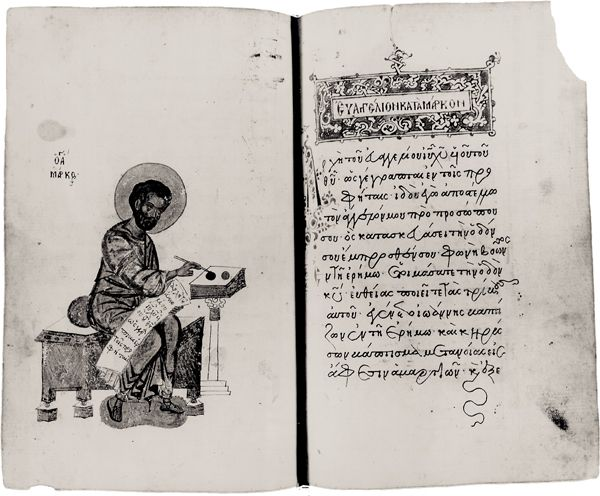
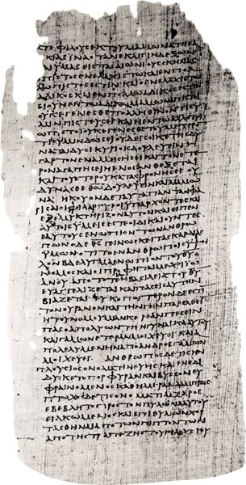

Though written later than many of the other NT writings, the four Gospels share a place of prominence in the NT order of books. Located at the beginning of the NT, they point to the centrality of their subject matter, the good news of Jesus Christ, for the biblical witness. Together they propose via the story of Jesus an essential and seamless continuity between the story of Israel and the story of the church. The story of Israel is thus positioned to point toward Jesus, the story of the church to see him as the fountainhead of its character and life. This, of course, is a theological affirmation about the nature of the Gospels, but it is one that has had enormous historical consequences. This is evident not least in discussion over the last two centuries concerning the nature of the Gospels, since interest in the study of Jesus has both assumed and perpetuated certain ways of thinking about their character. Because of the apparent difference in its subject matter, the nature of the Acts of the Apostles has typically been treated as a separate issue. As we will see, however, as a historical narrative Acts shares many affinities with the Gospels and the question of its nature cannot be separated from the issue of theirs (see chapter 7 below).
3.1. JESUS AND THE GOSPELS: MILESTONES
Turning to the first page of the NT raises immediately the question, What is a Gospel? This is because the first four books of the NT claim in their headings to be “Gospels.” Even if those titles are not original to these documents but were added decades later as a way of describing how they were to be understood, the issue of the primary attributes of these writings remains.
3.1.1. The (First) Quest of the Historical Jesus
Until the mid-twentieth century, the study of the Gospels, especially those of Mark, Matthew, and Luke, was tied to the study of the historical Jesus. Even though these two areas of exploration have by and large been separated, the questions of history and historicity raised in life-of-Jesus studies continue to influence how the Gospels are read. Hence, it will be useful to provide a brief sketch of the primary contours of the quest of the historical Jesus.
The Quest of the Historical Jesus, now typically referred to as the “First Quest,” encompassed the period from the late eighteenth century to the turn of the twentieth. Although the roots of such study can be traced further into the bedrock of the rise of rationalism, the onset of the quest of the historical Jesus is usually dated to the posthumous publication of an essay by H. S. Reimarus (1694–1768), entitled “On the Intention of Jesus and His Disciples,” in 1778. Here was the first in a long series of attempts to salvage a historically plausible picture of Jesus from a collection of writings, the NT Gospels, whose supernaturalism, it was alleged, could never be accepted by rational people.
Though not the originator of the Quest, one of its prominent figures was David Friedrich Strauss (1808–74); his “life of Jesus” helpfully indicates how the study of Jesus has assumed and perpetuated certain views regarding the nature of the Gospels. Strauss’s primary concern was to repudiate both the belief in the supernatural held by orthodox Christians and the attempts by rationalist scholars to retrieve through reason the historical core of the supernatural events recorded in the Gospels. In Strauss’s view, neither approach to the Gospels accounted for their essentially mythic, legendary content. He accepted as historical the basic outline of Jesus’ life as the Gospels have it, then argued that this historical skeleton had been fleshed out by the creative imagination of the early church. The church’s agenda, he averred, was to show that Jesus was the fulfillment of prophecy, and the church was not opposed to fashioning accounts so as to make clear this connection. If, for example, speculation had it that the Messiah would be a worker of miracles, then the early church would find means for portraying him in this way, irrespective of the availability of corroborative historical data. Hence, for Strauss, the Gospel portrait of Jesus the miracle-worker was the outcome of creative piety, not a vestige of historical reality.
How does one decide what in the Gospels is historical? Strauss asserted, first, that “when the narration is irreconcilable with the known and universal laws which govern the course of events,” then such an account is not historical. By “known and universal laws,” Strauss would have had reference to Isaac Newton’s (1642–1727) laws of motion; these constituted the prevailing scientific view of the world until Newtonian mechanics was undermined in the twentieth century by Albert Einstein. According to Strauss:
The traditional location of Jesus’ birth: a cave beneath the Church of the Nativity in Bethlehem. The tradition that Jesus was born in a cave dates back to the second century.
Now according to these laws, agreeing with all just philosophical conceptions and all credible experience, the absolute cause never disturbs the chain of secondary causes by single arbitrary acts of interposition, but rather manifests itself in the production of the aggregate of finite causalities, and of their reciprocal action. When therefore we meet with an account of certain phenomena or events of which it is either expressly stated or implied that they were produced immediately by God himself . . . , or by human beings possessed of supernatural powers . . . , such an account is in so far to be considered as not historical.
Consequently for Strauss, accounts of the miraculous or the prophetic and other records of “the intermingling of the spiritual world with the human,” being “irreconcilable with all just conceptions,” could only be the stuff of inauthentic record. To this first criterion Strauss added the axiom that when one account contradicts another — say, on the question of whether Jesus began his ministry prior to John’s imprisonment — one of the two is unhistorical.1
The response to Strauss’s reading of the Gospels was immediate and, in some cases, quite vitriolic. Nevertheless, his approach is representative of this First Quest. Like the works of Reimarus and others before and after him, Strauss’s work expresses two of the key characteristics of the Quest — namely, an unassailable confidence in reason and a consequent commitment to divorcing religion (or theology) from history. Indeed, what is particularly important about this example from Strauss is the way in which “history” functioned in his analysis. Enlightenment thinking held that all knowledge is historically grounded; as a corollary, the meaning of the Gospel texts was tied to the history to which those texts point — that is, to the life of Jesus understood within his own historical context. Such claims notwithstanding, it is clear that Strauss submitted traditions about Jesus to Strauss’s own history, his own understanding of what could and could not have taken place. The portrait of Jesus he presents is thus a Jesus who would not upset the sensibilities of those eighteenth- and nineteenth-century skeptics for whom the world allowed no place for the supernatural.
An important study written near the close of the First Quest illustrates further the choices facing students of Jesus and the Gospels a century ago. This is William Wrede’s The Messianic Secret, first published in 1901.2 Though the Gospel of John had figured prominently in the early days of the Quest, in the nineteenth century it had been dismissed as a theological rather than historical account of Jesus. In its place had surfaced the Gospel of Mark — almost universally hailed as the earliest and therefore most historical of the four Gospels. Against this near-consensus, Wrede insisted that Mark was no objective chronicler of history but rather the theologian responsible for broadcasting the idea of the “messianic secret” in the Second Gospel. Why does Jesus urge people not to speak of his messiahship to others? This, according to Wrede, is Mark’s way of smoothing over the fact that, during his lifetime, Jesus neither claimed to be the Messiah nor was recognized as the Messiah. Wrede proposed that Mark wove into his Gospel the notion that Jesus secretly revealed his messiahship to his closest followers, who would then make his identity clear to others following his departure. The messiahship of Jesus was thus for Wrede not precisely a Markan invention, since the messianic idea was apparently already present in the tradition, but it was propagated by Mark and, to this degree, the Gospel of Mark belongs properly to the history of doctrine; Mark provides no real view of the historical life of Jesus. After Wrede, many thought that Mark and the other Gospels might provide windows into the beliefs of the early church but could never be employed as source material for recovering the life of Jesus.
What of the promise of rationalism in the study of Jesus? Did it produce the sort of historical certainty proffered by people of the Enlightenment? In surveys of the First Quest of the Historical Jesus, it has become common to observe how “the historical Jesus” had become a convenient mirror for reflecting one’s own commitments, as scholars projected their own concerns onto the historical figure of Jesus. In 1906 Albert Schweitzer narrated the history of life-of-Jesus research from the 1770s to 1901 and reached this conclusion. Surprisingly, this awareness of the inherent subjectivity of historical Jesus study did not keep Schweitzer from providing his own portrait of Jesus of Nazareth. In fact, he used the form of a survey of other lives of Jesus as a foil by which to set up his own as the only credible choice.3
3.1.2. The New Quest
In the years following Schweitzer, lives of Jesus continued to proliferate, but serious study of the subject had departed from the mainstream of NT study. Some refer to this as the period of No Quest, since it was marked above all by the influential position of Rudolf Bultmann. He taught that it was both impossible and (thankfully) unnecessary to know anything about the life of Jesus of Nazareth, apart from the mere fact (the “that”) that he lived. Authentic faith can never rest on historical research, he insisted, for then it would no longer be faith. What is needed instead is an encounter with the Christ of Christian proclamation. This period, which extended into the mid-twentieth century, did not provide any significant alternative understanding of the nature of the Gospels. Even if some scholars like T. W. Manson and Vincent Taylor in Great Britain were strong voices against the skepticism of Bultmann and his substantial following, the basic dichotomy left by the First Quest remained: history or theology in the Gospels.
Bultmann’s own students were responsible for breathing fresh life into serious historical study of Jesus. Ernst Käsemann, for example, insisted against his former teacher that the early church had indeed been interested in the life of Jesus, or else would not have produced narratives of that life. Others, too, became obsessed with the question of continuity between the man from Nazareth who proclaimed the kingdom and the Christ proclaimed by the early church. Such interests fueled the New Quest, or Second Quest, of the historical Jesus.
At the turn of the twentieth century, Ernst Troeltsch had stepped forward to articulate a disciplined form of historical inquiry. He proposed three principles, and these became axiomatic in the New Quest. First, he insisted on the principle of doubt — that is, that all statements of an historical nature are open to doubt and require corroborative evidence if they are to be accepted. The second was the principle of analogy — that courses of events in the ancient world followed the same internal logic as events in the modern world. Hence, if we do not see adult males walking on water today, then by analogy we would conclude that the Gospel record of Jesus walking on water cannot be regarded as a historical reminiscence. Third, Troeltsch (following the physical laws devised by Isaac Newton) posited the principle of correlation, by which he understood that every event in the natural world is the result of (i.e., most be correlated with) a natural cause. In this manner, the possibility of a miracle was ruled out of court as a presupposition in historical inquiry.
Along with these principles, participants in the New Quest employed a series of criteria honed to demonstrate for each of the sayings or actions attributed to Jesus in the Gospels either authenticity or inauthenticity. Clearly, the fundamental understanding of the Gospels did not shift with the Second Quest. Rather, practitioners continued to speak in terms of peeling back the layers of theological interpretation in the Gospels in order to recover the historical kernel of those accounts. Armed with ever more precise instruments for engaging in such cutting and slicing, scholars in the Second Quest continued to think of history and theology in opposition.
Chief among the criteria employed in the New Quest were multiple attestation and dissimilarity. The first calls to mind images of the courtroom, with witness after witness called to the stand to report on an event. In study of Jesus, a tradition was regarded as (more likely to be) authentic if testimony to it came from multiple independent sources. In one of its most prominent uses, this criterion depends on prior decisions about the nature of the sources used by the Evangelists and about the literary interrelationships shared by their writings (see below). Thus, for example, if a single saying attributed to Jesus could be traced back to more than one more source, this saying, it may be presumed, is more likely to have originated with Jesus. An additional sense in which the criterion of multiple attestation is employed has to do not with sources but with forms. In this case, if an idea is expressed in multiple forms — whether a saying of Jesus, a parable, a miracle account, or an exemplary story — there is a strong presumption in favor of the attribution of that idea to Jesus. The fundamental historicity of Jesus’ instruction on “service,” for example, might be supported with reference to the saying in Mark 10:45 (“The Son of man came not to be served, but to serve. . . .”), his parabolic teaching in Luke 12:35–38 (when the master returns from the wedding banquet, he will have the faithful servants sit at the table and serve them), and the footwashing scene in John 13:1–17.
The criterion of dissimilarity gives a bias in favor of authenticity to those traditions about Jesus that are incongruent with Jewish tradition and with the early church. To put it more crassly, according to this criterion the authentic Jesus emerges at those points where he is neither influenced by the Judaism of his world nor influential among his disciples.
Not surprisingly, the Second Quest made almost nothing of Jesus the Jew, nor did it have much to say about the continuity between Jesus and the church or between the historical Jesus and the church’s Lord. What is surprising, perhaps, is that, in spite of its precision instruments and related claims of objectivity, in spite of the minimalist portraits of Jesus it produced, the New Quest also proved incapable of spawning a single portrait of the historical Jesus on which all could agree. Its most notable legacy was its skepticism about our potential for knowing anything about Jesus of Nazareth, not the historical certainty regarding him that it had sought.
The New Quest, which dates roughly from the 1950s to the end of the twentieth century, corresponds both chronologically and conceptually with other transformations in Gospels research. In a way roughly congruent with the notion that the historical Jesus is largely lost to us, study of the Gospels in the early twentieth century was concerned especially with the origin and development of traditions about Jesus. The Gospels were not reservoirs of raw data for the construction of a biography of Jesus, but neither were they coherent narratives endowed with consistent theological perspectives. They were thought of as collages — vignettes pasted together against a background. Following World War II, however, the Gospel writers came to be viewed as more than scissors-and-paste artists, as theologians in their own right. Study of the Gospels, in turn, began to focus on how the Gospel writers had amended and deployed their sources in order to ascertain the nature of their thinking and historical setting. This form of criticism (“redaction criticism,” on account of its portrait of the Evangelists as “redactors,” that is, as editors of their sources) signaled a shift from the use of the Gospels as windows into the life of Jesus to their use as windows into the life of selected Christian communities in the late 60s CE and beyond.
3.1.3. The Third Quest
Beginning already in the late 1970s and continuing into the present is a Third Quest of the historical Jesus. What immediately distinguishes this one from its predecessors is its transformed (or, at least, transforming) notion of history. Politics, religious experience, economics, etc. — these were sundered from one another in the West during the modern period, but are now increasingly seen as integrated aspects of social existence. Similarly, the reporting of historical events and the writing of historical narratives are increasingly seen as an interpretive, even theological, enterprise. To use the previous analogy, whereas the New Quest sought to peel back the layers of theology to recover the historical core of the Gospel accounts, in the Third Quest it is increasingly granted that no layer is devoid of either history or theology.
Innovations of this sort have led to two related developments. First, the Gospels can be studied each on its own terms as coherent narratives providing a theologically shaped narrative of the career of Jesus. Second, it is held that historical study of Jesus should never see itself as providing the single unbiased record of Jesus of Nazareth; rather, such study will always result in more-or-less satisfactory accounts possessing both interpretive and historical force.
Practitioners of the Third Quest have tended to resist the hard-and-fast lines drawn and defended in earlier study of Jesus. As a Jew, Jesus must be seen within the diversity of Jewish beliefs and practices in the Second Temple period. As a teacher with disciples, Jesus must be seen as exercising a formative influence on the community that gathered around him and continued after his crucifixion. As a Galilean, Jesus must have worked within (and against) the cultural realities of everyday experience, and his message must be correlated more intimately with the social, economic, political, and religious realities of his world. From a practical standpoint, these considerations have given rise to the primacy of one question in the Third Quest: Why was Jesus crucified? Any interpretation of Jesus’ career and claims that does not lead to his execution on a Roman cross and make socio-historical and theological sense of it cannot be taken seriously, according to the Third Quest.
3.1.4. Conclusion
We can thus see how closely related study of the historical Jesus and attitudes about the nature of the Gospels have been. What remains to be observed, though, is how often those beliefs about the Gospels have been assumed rather than explored. Before the eighteenth century, the simple historicity of the Gospels had indeed been questioned, but scholars largely took for granted the plausibility of their numerous attempts to harmonize those narratives into a single record of the life of Jesus. The outline and basic substance, though only rarely the supernatural content, of one or another Gospel was typically assumed to provide a historical basis for constructing a biography of Jesus in the original Quest. Such optimism was shattered, first, when it became apparent that modern biographers of Jesus had to provide their own interpretive frameworks for the events they recounted — and even further when it became clear that the Gospel writers had done the same. Even if one granted the historicity of individual events in the Gospels (and on these opinions were divided), the narrative framework of the Gospels (including transitional material, summaries, and even the overall “plot” of the individual Gospels) could not be granted this status. And so on the story goes. Recognition of both the importance of these considerations and their status as assumptions led finally to the studied exploration of the question, What is a “Gospel”?
The answer to this apparently simple query is actually quite elusive. For most readers of the NT, a Gospel is a book that narrates the career of Jesus, focusing especially on the nature of his public ministry, his suffering and death, and the empty tomb. Because of our familiarity with this usage, we may be surprised to discover that it was not always so — and that, in fact, there is no reason to imagine that the writers of the Gospels, or Evangelists, saw themselves as creating a new kind of narrative called a “Gospel.” It was Justin (d. 165 CE), writing in his First Apology, who referred to these documents as “the memoirs of the apostles, which are called Gospels” (66.3).
The term itself, “gospel,” is obviously important in early Christianity. For Paul “gospel” or “good news” served as a weighty term for the salvific message of Jesus Christ, and he uses the term in its noun or verb forms more than seventy times. Mark uses it too, and his usage helps to suggest its significance in the early church. Mark 1:1 — “The beginning of the gospel of Jesus Christ, Son of God . . .” — is often translated and regarded as a title either for the Second Gospel or for its opening. This popular rendering results from a problem in punctuation, however, since the following words, “just as,” intimate the closest possible connection between these opening phrases. We may translate as follows:

The beginning of the Gospel of Mark and a portrayal of Mark writing in a fifteenth-century Greek manuscript codex (University of Michigan Library)
The beginning of the gospel of Jesus Christ, the Son of God, as it is written in the prophet Isaiah:
“See, I am sending my messenger
ahead of you, who will
prepare your way;
the voice of one crying out
in the wilderness:
‘Prepare the way of the Lord,
make his paths straight.’” (Mark 1:1–3)
Accordingly, “the beginning of the gospel” is not for Mark the beginning of his book, as though he were referring to it as a “Gospel.” This would be a usage for which there would have been almost no precedent. Instead, Mark insists at the outset that, in order to understand the significance of the advent of Jesus Christ, Son of God, one must look first in Isaiah. Not coincidentally, Isaiah uses the term “to proclaim the gospel” or “the gospel that is proclaimed” repeatedly in a profoundly theological sense with reference to the eschatological coming of God and God’s dominion. Thus, the messenger of Isaiah 40, the one “crying out in the wilderness,” is charged to proclaim, “Your God has come!” (v. 9). Similarly, in Isa 52:7 “bringing the gospel” is set in apposition with “proclaiming peace and salvation” and announcing, “Your God reigns!” By grounding his presentation of the career of Jesus in Isaiah, then, Mark is performing an interpretive move of vast proportions; he signals that the Isaianic hope has come to fruition in the ministry of Jesus. “To believe the gospel” is for Mark to embrace this interpretation of Jesus and reorient one’s life accordingly (Mark 1:14–15).
Mark, then, did not refer to his book as a “Gospel,” and the other Evangelists are no more helpful in this regard. Matthew identifies his writing as a “book” (Matt 1:1), Luke describes his as a “narrative” (Luke 1:1), and John employs no such label.
All of this is to say that the term “gospel” is not self-interpreting as a reference to a “book” or “document.” At the same time, prior usage of this word with reference to the act and content of Christian proclamation suggests that the documents to which we now refer as “Gospels” were seen as the proclamation of Jesus in written form. It is certainly significant, then, that early Christian usage referred to the first four books of the New Testament simply with the titles, “According to Mark,” etc. According to this reckoning, there existed only one “gospel,” though it might represented in four ways.
In the larger Roman world, “gospel” refers above all to the announcement of good news, such as victory in battle or the birth of a child. Interestingly, the birthday of the emperor Augustus is known to have been regarded as the beginning of good news for the whole world — a fact that would not have been lost on those who expressed their allegiance to Jesus, and not Caesar, as Lord.
What, then, is a “Gospel”? One helpful way of addressing this question is to imagine a librarian in an ancient center of learning like Alexandria. Given a copy of one of these early Christian documents, where would he shelve it? Speaking generally, he would have been faced with three choices. As a narrative text (rather than, say, a philosophical treatise or poetry) within the first-century world of books and readers, the available options would have been historiography and biography, which take as their respective focus events that happened and people who lived, and novel, which possesses no necessary historical referent. Most now see the Gospels as conforming most closely to the genre of biography.
But attempts to characterize the Gospels as biographies of Jesus require important caveats. First, the designation “biography” is better suited to Matthew, Mark, and John than Luke since the Third Gospel is actually the first of a two-volume narrative comprising Luke and Acts — or, as it is often labeled, Luke-Acts. As will become clear in chapter 7, Luke-Acts is best understood as an example of historiography rather than biography. The difference implied by this distinction is not extreme, since biography as a genre grew out of the practice of historiography as particular persons, rather than “the great deeds of men,” became the focus of study and writing. Early on, biographies, like historiography, proceeded along roughly chronological lines; with time, however, these “lives” were arranged topically.
Second, it is not enough to analyze the character of the Gospels by comparing them simply with contemporary Greco-Roman literature. This is because of the self-consciously Jewish orientation of these works. Even if no OT books have the form of the Gospels, parts of some of those books, such as the Abraham-cycle or the Elijah-accounts, are suggestive precursors. A complete accounting for the character of the Gospels cannot overlook the important influence of OT and subsequent Jewish historiography, not least in their shared undertaking to represent the outworking of the divine will in historical narratives.
Third, we would be mistaken to imagine that, by “biography,” we should understand this form of literature, or genre, as analogous to contemporary expressions of the genre. Psychological motivations, childhood influences, physical appearance, date of birth — these and other data figure prominently in our expectations of contemporary biography but have little or no role to play in the Greco-Roman world. In antiquity a biography related the significance of a famous person’s career, rarely focusing on his childhood but often including reference to the way he died (for how a person died was regarded as a measure of his character). Moreover, “famous” persons acquired their fame not through their individuality or idiosyncratic behavior. The modern, Western conception of individuality has little place in Roman antiquity, where the identity and importance of persons were determined in relation to their groups of reference. Thus, an individual might be represented in a biography because he exemplified the qualities valued by society. One of the reasons for regarding the NT Gospels as having been written primarily for Christian communities rather than as evangelistic tools for non-Christians is the degree to which they assume that their readers have begun already to adopt the unconventional values proclaimed and lived by Jesus.
Finally, it is worth remembering that, as narratives, the Gospels are especially well suited to including a host of other literary forms, including parables, birth stories, genealogies, farewell discourses, sermons, and many others. This fact is important for understanding the growth of the Gospel-tradition leading up to the weaving of these narratives. It is also important since each of these other literary forms invites particular approaches to reading and interpretation (see below).
If our Alexandrian librarian were to place, say, the Gospel of Matthew among other examples of ancient biography, what might this entail for those who found it on the shelf? What expectations might they bring to it? Several points come to mind: (1) an unveiling of Jesus’ public life along chronological and/or topical lines (2) indicating by what standards and how Jesus was to be accorded the status of one deserving biographical treatment; (3) a commitment on the part of the author to holding in abeyance the temptation for wholesale creation of events; (4) an overall interpretive aim guiding the framing of events into sequences of cause and effect; and (5) a presentation of Jesus that, to some significant degree, presents him and his behavior as exemplary for readers.
None of the Gospels is a signed document, and this bespeaks their traditional nature. Indeed, the very concept of “authorship,” denoting individual responsibility for a literary product, largely taken for granted in modern society, is problematic when projected into ancient societies. Although it is possible to speak of an “author” with primary responsibility for the final form of the Gospel narratives, it must also be remembered that the materials woven into that narrative predate those narratives. Assuming that Jesus’ crucifixion can be dated into the early 30s CE, some thirty-five to seventy years would have passed before the final composition of the NT Gospels; hence, one of the questions that has occupied students of Jesus and the Gospels is how best to account for those intervening years.
3.3.1. Oral Transmission
The events to which the Gospels witness date for the most part to the late 20s or early 30s, though the birth and infancy material in Matthew 1–2 and Luke 1–2 belongs mostly in the period of approximately 6–4 BCE. Given Jesus’ status as a teacher, his popularity as an itinerant prophet, and his investment in a circle of disciples, it is certain that during his public career (1) his sayings and especially his deeds were the stuff of ordinary rumor transmission and (2) his teaching would have been subject to reminiscence and recitation by those who shared closest in his work. The latter reflects the well-documented practice of Jewish pedagogy at several levels, while the former belongs to the essence of village life. We who have been reared in literate societies have learned to depend on notes and books and computers for the preservation and maintenance of our memories, so it is difficult for us to appreciate modes of transmission in oral cultures. Nevertheless, these are two modes of oral transmission that are well documented in Jewish and Christian sources of the period (as well as in oral cultures more generally).
A further form is just as certain to have played an important role in the preservation and handing on of Jesus-material. This is the informal but controlled transmission of Jesus’ sayings and deeds within the communities that formed around or on the basis of his ministry. Some believers would have passed on the tradition in the context of worship. For example, it is likely that accounts of Jesus’ death and its interpretation in light of the OT Scriptures took form in the context of worship and, especially, the practice of the community meal in which Jesus’ words and deeds at the Last Supper were remembered (see 1 Cor 11:23–26). The formation of communities would also have provided the arena for transmittal of Jesus-material — whether in the form of baptismal practices or for the purpose of general instruction, on the analogy of Jewish pedagogical practices or in order to prescribe appropriate behavior within the community. That is, accounts of Jesus’ sayings and deeds would have been used to develop and propagate the identity of the community and to maintain its boundaries. These contexts need not have had the formality of the gymnasium or school, but those authorized by age or experience in the community would have carried the responsibility of ensuring the accuracy of the recitation and thus the stability of the tradition.4
How the oral tradition coalesced to the point of inclusion in the NT Gospels and continued to develop even after the writing of the Gospels will always be a matter of speculation. What is certain is that there existed in both Jewish and wider Greco-Roman societies the means for accurate transmission of oral materials, even if we can only hypothesize about when, by whom, and how closely these protocols were followed in the case of the Jesus-tradition. Given the conventional association of pools of tradition with key figures in a movement, however, it is probable that certain traditions converged around such figures as Peter, James the brother of Jesus, Mary Magdalene, and others. No doubt, much of the material associated with these figures would have overlapped, while others contributed to the uniqueness of their circles. Such traditions and collections of traditions, then, would have been shaped by and given shape to the beliefs and practices regarded as normative in those circles. Undoubtedly, some Jesus-materials would have increased in importance in the context of competing views of faithfulness to Jesus’ message of the kingdom. In this way, formative Christianity would have mirrored somewhat the unity and diversity of the Second Temple Judaism of which it was a part — a unity and diversity that is now reflected among the NT Gospels.
3.3.2. Sources and the Synoptic Gospels
In its preface, the Third Gospel makes reference to the presence of other “narratives” of “the events that have been fulfilled among us” (Luke 1:1–4). Luke thus provides a clear witness to the existence of other written accounts, but otherwise provides no hints as to their content. Scholars today differ markedly regarding the nature of the sources available to the Evangelists — for example, with some positing one or more written “sayings sources,” some urging the view that an account or accounts of Jesus’ suffering and death took written form already in the 30s or 40s, and others arguing that none of these had achieved written form prior to the writing of the first Gospel.

Luke 16:9–21 in Bodmer Papyrus XIV (P75), ca. 175–225 CE (Bodmer Library, Geneva)
Examination of the Gospels themselves, however, makes it clear that common sources were employed by two or more of the Evangelists, and that the first three Gospels share some sort of literary relationship. Matthew, Mark, and Luke share a high degree of similarity of content. (Their commonality has given rise to their being labeled “Synoptic” Gospels, having a “common view.”) The Gospel of Mark has less than thirty verses unique to it, so that more than 95 percent of the Second Gospel appears also in Matthew or Luke or both. This fact alone suggests that Mark either knew and used the First and Third Gospels as sources in an attempt to combine them, or that Matthew and Luke each made use of Mark.
Additionally, these Gospels share a common structure, following a common chronological order. Most important, though, is the startling similarity in vocabulary and literary style in those many sections where the Synoptic Gospels coincide in content. Why is this remarkable? (1) Even though Jesus spoke primarily in Aramaic and reports of his deeds and teaching would have circulated originally in Aramaic, the Synoptic Gospels register a high degree of verbal similarity in Greek. (2) Unlike English, where word order is closely monitored, in Greek the order of words is quite free and irregular. Yet, commonality extends not only to word choice but to word sequence, repeatedly. (3) The possibility that three authors, writing at different times and in geographically diverse settings around the Roman Empire, would use the same language in the same order in account after account is minute. Evidence of this sort has led to the conclusion that the Synoptic Gospels share a literary relationship.
The possibilities for Synoptic relationships are several, but three scenarios are championed today. (1) Mark wrote the earliest Gospel, which was then used independently by both Matthew and Luke; both Matthew and Luke had access to a further Sayings Source, called “Q” (from the German word for “source”: Quelle), as well as to additional materials, whether oral or written. This is the Two-Document Hypothesis. Those who prefer to think of Matthew’s third source as a written one sometimes abbreviate it as “M”; similarly, Luke’s third source can be referred to as “L.” Accordingly, the Two-Document Hypothesis is expanded to become the Four-Document Hypothesis.
(2) In recent years, the nature and existence of Q has received a great deal of attention. Some have gone so far as to refer to Q as an extant source — presumably a hyperbole chosen to urge the certainty of the existence of a saying source shared by Matthew and Luke. Among the most ardent supporters of the existence of Q are some scholars who believe they have discerned layers of tradition in Q itself. Accordingly, they speak of a series of recensions of the sayings source, and attribute each version to a particular community of Jesus’ followers. Not everyone is convinced, however. Many accept the theory that Mark was written first (a view referred to as “Markan Priority”), but either deny altogether the existence of Q or continue to speak of Q only as a collection of Jesus’ sayings without insisting that this collection was written or that it had achieved anything resembling a fixed form. These first two theories of Synoptic relationships are closely related and together have attracted the support of the vast majority of scholars.
(3) For centuries it was understood that the Gospel of Matthew, which appears first in the NT, must also have been the first Gospel to be written. Mark, then, used Matthew and Luke used Mark. More recently, a number of scholars have embraced the view that Matthew was the first Gospel, that Matthew was used by Luke, and that Mark employed both Matthew and Luke as sources. This view is usually referred to as the Griesbach Hypothesis, due to its advocacy by J. J. Griesbach in the eighteenth century.
This view has not won widespread support due to a number of weaknesses — especially (a) the difficulty in imagining that Mark would have used the First and Third Gospels but would have neglected to include in his book reference to Jesus’ birth and infancy, to Jesus’ post-resurrection appearances, and to much of his teaching (the Beatitudes, for instance); and (b) the lack of evidence in earliest Christianity of a perceived need for a document like Mark, the sole purpose of which, under this hypothesis, is to alleviate the tension between the Gospels of Matthew and Luke. Indeed, the fact that the NT in its canonical form has not one but four Gospels is evidence enough that placing these documents side-by-side, in spite of or perhaps even because of their differences, did not constitute an insurmountable obstacle.
The discussion surrounding the existence of Q is more difficult to assess. The most pressing evidence in its favor is the number of close verbal agreements between Matthew and Luke that are not shared with Mark. These might be explained by the possibility that Luke used Matthew (the notion that Matthew used Luke has rarely been proposed). But Luke’s treatment of Matthew could then only be described as implausible. What has happened to the major teaching sections in the First Gospel, for example? What is more, one finds little evidence that Luke has amended the Gospel of Mark in ways that Matthew has done — suggesting that Luke used this material as it came to him from Mark and not as it would have been mediated by Matthew. According to the data available to us from the First and Third Gospels, the Q-tradition would have consisted of at least 230 verses — mostly sayings of Jesus devoid of marks of setting or context — but whether this tradition comprised a secure, written document remains a matter of speculation.
During most of the twentieth century the study of the Gospels proceeded on the basis of one or another of these hypotheses regarding the relationships among the Synoptics. Such work has become increasingly problematic because of growing unease with all of these scenarios. The search for simple lines of transmission has given way in some circles to a recognition of the possibility of more and more complex veins of tradition, with oral and written materials circulating side-by-side and interacting in now untraceable ways. Although these developments in the conversation have not undermined the basic assumption that Mark was the earliest Gospel to be written, they have opened the door to wider circles of influence as accounts of Jesus’ actions and teaching were put to use in the formation of communities seeking, sometimes in debate with each other, to be faithful to their Lord.
3.3.3. The Gospel of John and the Synoptics
Although the question of the relationship between the Fourth Gospel and the Synoptics will resurface in chapter 7, a brief comment is relevant now. The differences between the Gospels of Matthew, Mark, and Luke on the one hand and John on the other have attracted attention for centuries. According to the church historian Eusebius, Clement of Alexandria remarked early on that, whereas the historical data had already been provided, John set out to compose a “spiritual Gospel” (Hist. Eccl. 4.14.7). Of course, in general outline the Gospel of John bears some similarity to the Synoptics, but only in the most general sense: Jesus’ public career precedes his suffering and death, and so on. Closer scrutiny reveals, for example, that material located toward the end of Jesus’ career in the Synoptics, especially as this pertains to Jesus’ work in Jerusalem, has in several cases been moved forward and scattered throughout the Fourth Gospel. Again, the parables of Jesus in the Synoptics and the tradition of Jesus’ proverbs have been replaced in John by lengthy and well-developed sermons. In the end, the degree of overlap between the Gospel of John and the other NT Gospels is less than ten percent.
In the last two centuries, observations of this sort have led almost all students of the Gospels to posit Johannine independence from the Synoptic Gospels. Those few points where there is significant overlap, such as the accounts of the anointing of Jesus prior to his passion, are typically explained with reference to common sources rather than to John’s use of the Synoptic Gospels (and Mark in particular) as sources. If one allows for the continuing influence of oral and written tradition following the writing of the first Gospels, this is a plausible theory. Others have begun to proffer a mediating view, suggesting that it is unthinkable that the Fourth Evangelist, writing near the end of the first century, would have been unaware of his predecessors. According to this line of thinking, John knew the other Gospels but, being motivated by different interests, did not employ them as sources.
3.3.4. Conclusion
Our agenda in this survey has been not so much to reach certainty on Gospel relationships as to suggest how the NT Gospels came to be. Much of what we might want to know about sources and traditions and literary interrelationships is unknowable, at least with certainty, so that the best we can do is to produce and examine theories about them. Even in the absence of certitude on such details, however, we can move forward on the basis of some conclusions. Most importantly, we can with good reason imagine the development of lines of tradition grounded first in events in the life of Jesus, then shaped and recited in oral and written reminiscence before they were recorded in the Gospels. It is true that each stage of the transmission process was capable of adding interpretive nuance to these accounts, but this is only to admit what we have already seen — namely, that history is always understood in relation to communities of record. It is also clear that the Evangelists were themselves links in the ongoing chain of transmission, so that their accomplishments in narrating the story of Jesus must be viewed within the context of those communities of Jesus’ followers for whom those accounts were significant.
3.4. LITERARY FORMS IN THE GOSPELS
The importance of our discussion of the genre of the Gospels has rested largely on the implications of the recognition of genre for interacting with and interpreting a text. One will naturally employ different reading protocols when confronted with a theological treatise and an allegorical novel. Genres develop over time, coming to represent conventional and repeatable patterns of discourse that assist communication among people in particular sociohistorical settings. In the case of the Gospels, we can recognize both how they participate in ways of writing conventional in their day — in the case of Matthew, Mark, and John, biography, while in the case of Luke-Acts, historiography — and, at the same time, take advantage of the flexibility inherent in all genres or literary forms in order to bring content and form into concord. That is, the content of the Gospels, their focus on Jesus of Nazareth and his message, helped to shape their form, to bring more into the foreground the basis of their story in the history and Scriptures of Israel.
One of the special geniuses of narrative is that individual narratives are capable of playing host to many other forms of discourse. When approaching a narrative text, then, one is interested initially in the question, What sort of narrative is this? But then the reader must give attention also to this narrative’s constitutive subgenres or literary forms. These, too, invite particular expectations and reading protocols; each contributes to the overall interpretation of the narrative at the same time that the meaning of each is constrained in part by its location within the larger narrative. Within the Gospels, numerous subgenres might be named — for example, genealogy, symposium, type-scene, farewell discourse, passion narrative, summary, and parable. This is only a partial list, but these are representative. (The particular challenge of the speeches in Acts will be discussed in chapter 9.)
3.4.1. The Genealogy
Both Matthew and Luke include genealogies of Jesus in their Gospels (Matt 1:1–17; Luke 3:23–28), and the importance of ancestry is marked in other, less formal ways (e.g., Luke 1:5, 27). At its most abstract, a genealogy is a record of relationships of descent. In reality, though, genealogies serve important social roles since they provide the basis for membership in particular groups of kin. For this reason, in Israel’s history, in the Greco-Roman world, and in many contemporary cultures genealogies are not marked by strict biological accuracy, but serve instead to structure history, to mediate status and power, and so on. In some cases, certain ancestors or groups of ancestors can simply be dropped from genealogical lists, or records can be adjusted to reflect better the needs of a contemporary social and kinship structure. Readers of genealogical records, then, typically must navigate between the actual and the ideal in the structures of ancestral relationships.
In the Gospel of Matthew, for example, the opening genealogy purposefully fashions the history of Israel into sets of fourteen and draws special attention to Jesus’ royal, Davidic lineage. Surprisingly, five women are included in his record — surprising since women would not ordinarily have been included and all the more since the intrusion of these names into the genealogy rehearses aspects of Israel’s past that some might think should best be forgotten. Some are noted in Israel’s history for their promiscuity and others as non-Israelites, so it is obvious that they were not added to enhance Jesus’ stature. Rather, their inclusion helps to communicate something about the nature of the good news of Jesus’ coming.
Genealogies often move from the eldest to the most recently born. Luke’s moves in the opposite direction, from Jesus back to “Adam, son of God.” The key to making sense of the purpose of Luke’s ancestral list lies not so much in the patterns and numbers, as in Matthew’s Gospel, as in the surrounding emphasis on Jesus’ identity. In the infancy narrative Jesus was announced as “Son of God” (Luke 1:32, 35), a role he embraces already at age twelve in the temple (2:49). At Jesus’ baptism, God himself identifies Jesus as his Son (3:21–22), and this is followed immediately by Jesus’ genealogy. Not coincidentally, Luke introduces his ancestral record by observing that Jesus was thought to be what he was not — namely, the son of Joseph. Afterwards, Jesus is led by the Spirit into the wilderness where the devil tests him with regard to the nature of his sonship (4:1–13). Luke’s agenda to have his audience recognize that Jesus’ status as Son of God is thus paramount, and the literary form of “genealogy” is employed to this end.
Elsewhere, too, in the Gospels and in Paul, concern with ancestral heritage can play a similar role of providing indications of status and kinship (e.g., Luke 1:5; Phil 3:5).
3.4.2. The Symposium
Especially in the Third Gospel the literary portrait of the Greco-Roman symposium has been woven into the narrative of Jesus’ career. In contemporary practice and literature, the symposium was the second course of a banquet, a drinking-and-talking party. Typically, symposia were characterized by a common cast of characters: the host, usually noted for his wealth and/or wisdom, the chief guest, notable for his wit and wisdom, and others, who might participate to varying degrees in the discussion. Symposia also possessed a typical structure, moving from the identification of the guests, to an action or event that determines the topic or introduces the topic of the day, to the discourse itself. The symposium was also characterized by an etiquette suited to it. As with meals in general, those on the invitation list consisted of persons (typically men) whose presence would preserve and enhance the status of the host. In addition, guests were placed around the outside of a U-shaped table, reclining at the table in positions that marked their relative status. Such a public representation of status was not to be the subject of conversation, however, since the symposium was marked by its role as a friend-making meal, where table talk was to nurture good relations, not divisiveness.
Read against this literary-cultural backdrop, several of Luke’s accounts come into sharper interpretive focus — pointing most notably to Jesus’ open practices at the table, indicating his willingness to share the table with persons of low status, even women (see Luke 5:27–32; 7:36–50), his unconventional discourse to his table companions, urging them not to concern themselves with status-seeking and positions of honor (14:1–24), and the outrageous behavior of his followers, who argue over greatness at the table (22:24–27).
3.4.3. The Type-Scene
Type-scenes are episodes that occur at critical moments in a character’s life that are comprised of an established pattern of motifs. In the Gospels, type-scenes are often in evidence in the way the Evangelists make use of OT patterns, though a Gospel writer is also capable of forming his own repeated scenes. The birth narratives in the First and Third Gospels are interesting in this respect, since the attentive reader easily picks up reverberations from earlier stories in the recounting of Jesus’ birth. The elements — announcement of birth, name of child, future of the child — appear in Gen 16:7–13; 17:1–21; 18:1–15; Judg 13:3–20; Matt 1:20–21; Luke 1:11–20, 26–37; 2:9–12. Similarly, one finds in the Gospels scenes of commission that borrow from OT precedents (see Judg 6:14; Jer 1:7–10), the familiar man-meets-woman-at-the-well type-scene (see John 4:1–42), and so on. In the Third Gospel, Luke establishes and repeats a pattern concerning Jesus’ practices at the table that lead one to interpret one scene in light of the other (see Luke 5:27–32; 15; 19:1–10).
Once they are recognized, type-scenes are important in two related ways. First, they establish expectations on the part of the reader, helping her to anticipate what might come next. Thus, when we hear that Elizabeth and Zechariah are old and childless, we may immediately wonder if they, like Sarah and Abraham, will be the recipients of divine benefaction in the form of a miraculous pregnancy. On the other hand, patterns can be employed precisely in order to subvert expectations. Sometimes a writer will provide telltale reminiscences of a type-scene in order to surprise the reader with a sudden, unexpected turn in the account.
3.4.4. The Farewell Discourse
The farewell discourse is a literary form known in the OT and in both Jewish and Greco-Roman literature. In the OT, farewell discourses are attributed to Jacob (Genesis 48–49), Moses (Deuteronomy 31–34), Joshua (Joshua 23–24), and others. Generally, the elements of the farewell discourse include the following: reference to approaching death, gathering of one’s kin or followers, review of one’s life, exhortation, predictions, and warnings, and blessing and final prayer. In NT narratives, farewell discourses are discernible in Luke 22, John 13–17, and Acts 20:17–38. Their purpose is always to instruct those who remain behind, but, in doing so, the farewell discourse can also take on the form of a defense of the one saying farewell. In such cases, though, even this serves to underscore the fundamental values and practices that the ongoing community should embrace. The particular significance of the farewell discourse lies most pointedly in the fact that it reports the honored person’s last words, allowing the sum of that person’s message to be capsulated into one teaching moment of special gravity.
3.4.5. The Passion Narrative
Each of the Gospels devotes significant sections of its narrative to an account of Jesus’ suffering and death (Matthew 26–27, Mark 14–15, Luke 22–23, John 12–19). In doing so, they obviously bring into the foreground the centrality of Jesus’ death for the narration of God’s intervention in history to bring good news, and they do so by drawing on what would have been a well-worn literary form. This is the “story of the vindication of the innocent sufferer” found in the OT and in subsequent Jewish literature. Set against a legal or royal setting, the chief characters in these accounts are recognized for their outstanding qualities; their lives are endangered, often through malicious scheming; even though they are innocent, they suffer persecution; and, finally, they are vindicated. Examples of this literary form include the accounts of Joseph in Genesis 37–42 and the book of Daniel. Early on in representations of this form, rescue and vindication came prior to death, but in the literature of the Maccabean period rescue and vindication might be postponed to come after, and through, death (see 2 Maccabees 7 and Wisdom 1–2, 4).
These narratives participate in a large and probing literature in Israel and Judaism having to do with the suffering of the righteous. This depository of texts included the psalms of the suffering righteous (see especially Psalm 22) and the song of the Servant of Yahweh in Isa 52:13–53:12, a text that combines the twin motifs of vindication of the innocent and effective death on behalf of others. The passion narratives of the Gospels have their roots deeply intertwined with these and other Scriptures, which contributes depth of significance and interpretation within the redemptive plan of God to the shameful, horrific death of Jesus on a Roman cross.
3.4.6. The Summary
Though the “summary” has an important role in the Gospels, it is not so much a subgenre or literary form as it is a literary device. “Summary” is one of the many ways of marking time in a narrative. Sometimes, when the narrator wants to slow down the process of reading and draw special attention to a scene, more detail will appear in the narrative, more time indicators, more words, more background, more color, and the like. But with the summary the narrator uses far less narrative space to relate the passing of time and occurrence of events. The Evangelists employ summaries often to provide transitions from one scene to the next and to provide important background information (e.g., Mark 1:45). What is crucial for readers of the Gospels and Acts, though, is the way “summary” serves to emphasize what is “typical” in the narrative (e.g., Luke 8:1–3; Acts 2:42–47). One can generally assume that practices mentioned in narrative summaries have the force of habits; though mentioned only once or twice, they actually sketch what is characteristic and pervasive.
3.4.7. The Parable
In spite of decades of serious study, the nature of parables continues to elude the grasp of students of Jesus and the Gospels. In part, this is because of the desire on the part of interpreters to lasso into a single definition what actually appears in the Gospels as a multifaceted phenomenon. In part, it is also due to our distance from the world of Jesus’ parables, so that their substance easily escapes us. We often think of parables as short example stories. Although this is one possible meaning, the term “parable” might just as easily be used in the Gospels with reference to a proverb or axiom, a brief comparison, a simile, a lesson drawn from everyday life, or metaphorical language in general. Often key to the definition of “parable” is the notion of “parabolic” — that is, employing what is known in order to provide insight into what is not known. In the end, though, this is not a very helpful way to think about “parable” because of the inherently metaphorical nature of all language; referring to the metaphorical role of parable tells us little that is unique to parable. It is true in the case of Jesus’ teaching, though, that we may have a difficult time moving with the parable from “what is known” to “what is unknown” because what the parable presumes is no longer so well “known.” Unfortunately, our unfamiliarity with some or many of the sociohistorical referents of parables has led sometimes to a desire to make sense of all parabolic teaching as though they were best appreciated as allegories referring to God, Jesus, and humanity. Here is one of those arenas where greater familiarity with the first-century world of Jesus and the Gospels can be particularly beneficial.
As a literary form, “parable” is nevertheless capable of greater definition. Generally, a parable is an imaginative story — possessing a beginning, a middle, and an end — developed from the stuff of everyday life and related for its pedagogical value. Parables may point beyond themselves, evoking the larger story of God-human relations, or they may depend for their message simply on people applying the lessons of everyday life to the life of discipleship. Luke in particular rehearses parables of Jesus where the audience is best served simply by hearing the story: You know how it is in the world out there, Jesus says; why have you not learned to apply what you know to life before God (e.g., Luke 16:1–9)? Sometimes, the parable communicates by introducing into the narration a surprising twist, the introduction of the unexpected or the relating of the unconventional in order to provoke the audience to reflect more deeply on the story’s meaning — and on the nature of all reality. Such parables often embody and sponsor an alternative vision of the world and of life before God. Often parables are not oriented toward passing on cognitive lessons as much as toward effecting responses. They are not words of comfort. “The parables make a backdoor assault on the familiar worlds in which people live with God, with a lightning speed that the evasive heart of the listener is hard put to match.”5
3.4.8. Conclusion
Parables, passion narratives, and the rest — these are only a selection of the literary forms embraced by the Gospel narratives. To these others might have been added — miracle stories, hymns, call narratives, and pronouncement stories, for example. Ongoing interaction with the Gospels will build one’s sensitivities to these subgenres, as well as develop one’s ability to interpret them.
In reading the Gospels and Acts, however, it is also important to remember that these forms are contained within the larger narrative, which constrains how they are to be interpreted. Or, to be more precise, these smaller literary forms help to give meaning to the narrative even as the whole narrative helps to determine the significance of these parts. A parable, for example, might provide an interpretive commentary on all or part of the Gospel in which it is located, or even serve to push the plot of the Gospel forward.
3.5. READING NEW TESTAMENT NARRATIVES
As Luke has it, the Gospels and Acts narrate “the events that have been fulfilled among us” (see Luke 1:1–4). Of course, as we have seen, the Gospels are more focused on a person than events on the world stage. Nevertheless, these documents are thus seen to have as their intent a particular form of “representation.” This is the recounting of the impact of Jesus’ career, not the representation of “what really happened” but of events-in-their-significance, in relation to Jesus’ followers. An analogy from the visual arts may be helpful, even if it is limited. How might Jesus be portrayed? A photograph might be taken, providing a relatively objective snapshot of an actual moment in the life of Jesus. Or an abstract painting might be produced, providing us with perhaps only the vaguest impression of Jesus. Alternatively, an artist might paint a portrait of Jesus — a medium allowing for selectivity, nuance, and interpretive attention to detail, but nonetheless a portrait of Jesus.6 Any photographer will recognize the limitations of this analogy, since many interpretive choices mark the photographer’s art. Nevertheless, this comparison points helpfully to the nature of the Gospels as selective documents, selective in the choices of both what to include and how to combine that material into coherent narratives.
When people narrate the career of Jesus and the life of the early church, they are manifestly engaged in significance-making, with the result that those involved in the quest of the historical Jesus have generally had one agenda, students of the Gospels another. Students of the Gospels are not interested primarily in reading behind the Gospel texts in order to take the measure of the raw materials employed by the Evangelists. Recognizing the biographical and historiographical character of the Gospels and Acts establishes certain readerly expectations and an agenda for study. Influence from the OT and later Jewish literature on the Gospels raises the question, How has history been shaped in this framing of theological commitments in the form of a narrative? Influence from Greco-Roman biography and historiography raises questions about the Gospels’ focus on this person, Jesus, and his exploits: How has Jesus been portrayed? How do these scenes work together? What do they show and tell about his character and identity? What do they show and tell about the character of those who would follow him in faithful discipleship? Our recognition of Greco-Roman influence on the Gospels and Acts might provoke our interest in how these narratives portray the overarching purpose being served in the narrative. What are the roots of this narrative presentation? To what end is it directed?
“Historical knowledge,” then, is not the same thing as “what actually happened.” Historical knowledge borrows from the past environmental situations, events, and persons, and gives significance to the past. Hence, “history” in the sense of historical knowledge is both less and more than “the past.” This is because (1) no historical account is capable of recovering the totality of any past event, since the content of those events is virtually limitless, (2) the past consists of events and situations, while history locates those events and situations in an account that tells a story about what happened, (3) historical narratives must choose from the available data base provided by the past, and those choices are always guided by a sense of what is important, and (4) because historians know the future of the past, as it were, they must shape their accounts in order to take into account where the past has led. Within Christian communities, the Gospels are thus recognized as authorized interpretations of the significance of the situations and events related to the life of Jesus.
For example, it is difficult to imagine that a Roman historian writing in the mid-40s CE would ever have mentioned the death of Jesus. What role would this event have served in his historical narrative, after all? This question is especially potent when it is remembered that Roman historians were generally concerned to extol the virtues of eternal Rome. If our imaginary Roman historian were to mention Jesus’ death at all, it would have been as a mere illustration of troubled Roman-Jewish relations during this period. If the Gospel writers not only mention this death but actually make it central to and climactic in their narratives and if historians in later centuries spoke in profoundly theological terms of Jesus’ execution, this is because these other writers regarded this event as something more than a footnote in the annals of the Roman Empire. For them Jesus’ crucifixion had the status of an epoch-making event. To put it differently, our Roman historian and the Evangelist Matthew might have used a similar pool of events, situations, and characters to narrate history, but they were concerned with different plots, with different views of what was significant.
If we wish to take seriously the narrative presentation of the Gospels and Acts, then first we must take seriously the total shape of these writings as narrative in their final form — complete wholes, internally coherent and interactive. In studying the Gospels and Acts as narratives, we are interested in establishing links between the narrative text and the values, institutions, and practices of which the wider culture consists, but priority goes to the analysis of the literary artistry of a narrative text, to its capacity to define an internally coherent world, and its power to persuade readers to embrace its understanding of reality.
Analysis of NT narratives features two interrelated assumptions about the way narratives work. The first has to do with the distinction drawn between “story” and “narrative.” We may tend to use these terms interchangeably in ordinary discourse, but they are quite distinct. “Story” refers to the content of narration, while “narrative” refers to its particular expression; story refers to the “what,” narrative to the “how.” This distinction assumes that the elements of a story, a set of events, might be told in any number of ways, but that each of these ways would differ in meaning from the others. We are interested in how those events are arranged and expressed in a given narrative, with reference to the order of events and causal relationships among events. As Aristotle observed, “narratives” are characterized by temporal sequence and an orientation toward the realization of an objective or the resolution of a dilemma — that is, they possess a beginning, a middle, and an end. The NT Gospels might be regarded as case studies for representing the difference between story and narrative, since in two, three, and sometimes all four of these books the same events appear, but they are recounted within narrative sequences that provide these same events with different significances.
The second assumption concerns our access to the author and readers of the Gospel narratives. New Testament narratives are anonymous, and almost everything we know about their authors (e.g., their skill in Greek, their predilection for urban life, or whatever) comes to us via a close reading of these narratives themselves. This, of course, gives us access not so much to the “real authors,” but to the authors as they are known to us from the texts — that is, the “model authors.”
Similarly, we have no direct access to the actual first readers of the Gospels and Acts. We know nothing in particular of their needs or concerns, nor anything about how they might have heard these narrative texts. What we do have access to is the sort of reader that the text seems to presume — that is, the model reader. From the information provided by the text itself, we can extrapolate the sort of reader imagined by the narrative and even follow the narrative to see how it seems to be calling forth responses on the part of this model reader. From this interpretive vantage point, the goal of reading is for the real reader, as it were, to become the model reader — that is, to enter into a kind of interpretive dance whereby one is able to deal interpretively with the text in a way that corresponds to how the author has dealt with it generatively. This, in fact, becomes a test for validity in narrative interpretation: Does the text itself provide the basis for anticipating that the reader should respond in this way?
This does not mean that the Gospels contain within themselves all that is needed for their interpretation. Taking the narrative texts seriously as narratives is important, but it is also crucial that we remember that “what is written” always assumes a great deal that is not written. Authors always assume on the part of their readers certain kinds of knowledge, so that gaps in the narrative text often signal points at which the author presumes that she and her audience share common presuppositions. Since the Gospels were written not to one church or one community, but to a wide-ranging audience made up mostly of Christian believers in Roman antiquity, many of those shared assumptions will relate to normal cultural conventions, many others will relate to a common heritage grounded in the Scriptures of Israel, and perhaps still others will relate to various levels of rudimentary knowledge concerning the story of Jesus (see Luke 1:4). Hence, “reading the Gospels as narrative” is always related to developing sensitivities to the world these narratives presume.
The practice of narrative reading also calls for attention to a number of elements within the narrative that contribute to its overall dynamic — six of which we can mention and briefly develop here. (1) Chief among these is the establishment early on in the narrative of a fundamental aim, the potential achievement and/or frustration of which creates tension within the narrative and drives the narrative forward. Concentration on the identification and attainment of this aim on the part of the reader draws attention to two aspects of the Gospels and Acts that are often lost in other forms of reading — namely, the degree to which NT narratives are about God and the achievement of God’s aim, and the urgency with which the reader is confronted to align himself or herself for (or against) this aim. In this reckoning, for example, the Gospel of Luke and the book of Acts are not so much about Jesus and his witnesses as they are about the ancient purpose of God now coming to fruition. Emphasizing the issue of narrative aim also brings into the foreground the motif of conflict as characters and institutions within the narrative arrange themselves over against the aim of God and those who serve him.
(2) Additionally, narrative analysis concentrates on the sequence of events as they are arranged within the text. The importance of order is highlighted by the fact that, when reading narrative texts, readers encounter and judge the significance of each event in the light of the events that have preceded it. Narratives typically work not only with a pronounced sense of teleology, with events rushing toward an aim, but also with attention to causal relations; prior events are understood in some sense to set the stage and provide the basis for later ones.
(3) The progression of events is also related to issues of timing. Sometimes the Evangelist will pass over scenes quickly, providing summaries that indicate what is typical and expected. At other points, the crucifixion scene for example, the writer will slow down the narrative pace, providing time indicators and a wealth of detail in order to prompt the reader to linger over an event. At still others, the Evangelist will recount a series of similar events or sayings, or even call attention to an event repeatedly, either in prospect or retrospect; in these and other ways, significance is allocated through the use of the narrative devices of frequency and duration.
(4) The identification and formation of characters within the narrative are also crucial to narrative analysis, and the Evangelists draw on a substantial repertoire to indicate the nature of the persons they introduce: brief character references, access to inner thoughts, reports of characteristic activity, and the like.
(5) Also of consequence is the point of view from which statements are made. Because of the esteem with which God is held in the Gospels and Acts, messages that represent the divine point of view — whether they be from angels or the Scriptures or God’s own voice — become the benchmarks of valid interpretation within the narrative. Moreover, because the narrators of the Gospels and Acts so fully align themselves with God’s point of view, their assessments are to be taken at face value. This is not true of everyone within the narrative, however, since Jesus’ opponents, the wicked within parables, and sometimes even Jesus’ disciples themselves are depicted as unreliable.
(6) We are also concerned with presuppositions — including, first, the initial assumptions a narrative makes about its audience and, following this, the building up of presuppositions within the narrative itself. For example, it is notable that the Gospel of Mark opens with an assertion that it never attempts to prove, namely that Jesus is the Messiah and Son of God. Apparently, the Second Evangelist can assume that his audience will embrace this characterization of Jesus, even if the narrative he then relates is decidedly oriented toward shaping in what sense his audience might understand the nature of Jesus’ messiahship and divine sonship. This illustration also draws attention to how a narrative is able to provide new definitions for old concepts and thus to build for its audience a new lexicon of meaning as fresh information is provided about assumed values and conventions. Thus, the Second Evangelist may not devote his narrative to proving that Jesus is the Messiah, Son of God, but he does go to great lengths to shape how his audience might come to understand the content of that inaugural affirmation.
Within the Gospels and Acts, one of the expectations that come most to the fore is that audiences will already have become intimate with the Scriptures of Israel. Through direct citation of Old Testament texts, or allusions, or even sometimes faint echoes, Israel’s Scriptures provide added texture to the significance of these narrative texts.
3.6. EPILOGUE: THE GOSPELS AND ACTS AS SCRIPTURE
One of the important roles of narrative in the NT canon is to serve as a counterbalance to what might appear to be its overwhelmingly didactic table of contents. Of the twenty-seven NT books, five are narrative texts, one is an apocalypse, and the remainder consists of letters and treatises of various kinds.
These particular narratives have a historiographical intent, bearing witness to historical events and persons at the heart of the gospel and its propagation. At the same time they bear witness to what can never be domesticated by the scrutiny of historians, the larger aim served by these people and events. In an ultimate sense, these NT narratives are about God — God’s purpose, God’s intervention, God’s graciousness, and God’s achievements. Although they have both ethical content and ethical ramifications, more fundamentally these narratives promote a particular vision and stimulate a particular imagination. They are not first about what we must be or do, but about a transformed view of God. They illustrate the dispositions and behaviors entailed by faith, but only as corollaries to a changed perspective, without which neither codes nor examples of behavior will be of much use. These narratives are thus concerned with the exposition of God, and their power as Scripture rests above all in their capacity to evoke in their audiences new ways of listening and seeing.
James L. Bailey and Lyle D. Vander Broek, Literary Forms in the New Testament: A Handbook (Louisville: Westminster/John Knox, 1992)
Richard J. Bauckham, ed., The Gospels for All Christians (Grand Rapids: Eerdmans, 1998)
William R. Farmer, The Gospel of Jesus: The Pastoral Relevance of the Synoptic Problem (Louisville: Westminster/John Knox, 1994)
Joel B. Green, Scot McKnight, and I. Howard Marshall, Dictionary of Jesus and the Gospels (Downers Grove: InterVarsity, 1991)
Martin Hengel, The Four Gospels and the One Gospel of Jesus Christ: An Investigation of the Collection and Origin of the Canonical Gospels (Harrisburg: Trinity Press International, 2000)
David Lowenthal, The Past Is a Foreign Country (Cambridge: Cambridge University Press, 1985)
1. David Friedrich Strauss, The Life of Jesus Critically Examined, ed. Peter C. Hodgson, tr. George Eliot (Life of Jesus Series; Philadelphia: Fortress, 1972 [1835–36]) 88.
2. William Wrede, The Messianic Secret (Library of Theological Translations; Cambridge: Clarke, 1971).
3. Albert Schweitzer, The Quest of the Historical Jesus: A Critical Study of Its Progress from Reimarus to Wrede (London: SCM, 1954).
4. See the discussion in Kenneth E. Bailey, “Information Controlled Oral Tradition and the Synoptic Gospels,” Themelios 20 (1995) 4–11.
5. John Goldingay, Models for the Interpretation of Scripture (Grand Rapids: Eerdmans, 1995) 80.
6. Robert A. Guelich, “The Gospels: Portraits of Jesus and His Ministry,” JETS 24 (1982) 117–25.